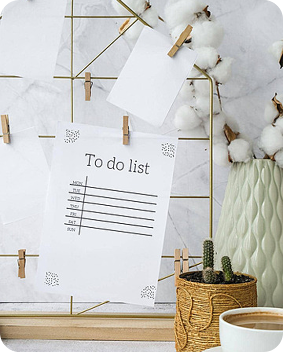

Team Project 10th GoIteens Group
Our team of five developers created a dynamic and user-friendly TODO List application using JavaScript, SASS, PUG, and Bootstrap. This project was developed as the final assignment for the third semester at GOITEENS. We focused on building an intuitive interface with responsive design for seamless task management. SASS improved our CSS workflow, while PUG streamlined HTML templating. Bootstrap provided a solid foundation for styling and layout consistency. The result is a fully functional, modern TODO List that enhances productivity and user experience.